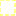

<!doctype html>
<html lang="en">
    <head>
        <meta charset="utf-8">
        <meta http-equiv="X-UA-Compatible" content="IE=edge">
        <meta name="viewport" content="initial-scale=1,user-scalable=no,maximum-scale=1,width=device-width">
        <meta name="mobile-web-app-capable" content="yes">
        <meta name="apple-mobile-web-app-capable" content="yes">
        <link rel="stylesheet" href="css/leaflet.css"><link rel="stylesheet" href="css/L.Control.Locate.min.css">
        <link rel="stylesheet" href="css/qgis2web.css"><link rel="stylesheet" href="css/fontawesome-all.min.css">
        <link rel="stylesheet" href="css/leaflet-control-geocoder.Geocoder.css">
        <link rel="stylesheet" href="css/leaflet-measure.css">
        <style>
        html, body, #map {
            width: 100%;
            height: 100%;
            padding: 0;
            margin: 0;
        }
        </style>
        <title></title>
    </head>
    <body>
        <div id="map">
        </div>
        <script src="js/qgis2web_expressions.js"></script>
        <script src="js/leaflet.js"></script><script src="js/L.Control.Locate.min.js"></script>
        <script src="js/leaflet.rotatedMarker.js"></script>
        <script src="js/leaflet.pattern.js"></script>
        <script src="js/leaflet-hash.js"></script>
        <script src="js/Autolinker.min.js"></script>
        <script src="js/rbush.min.js"></script>
        <script src="js/labelgun.min.js"></script>
        <script src="js/labels.js"></script>
        <script src="js/leaflet-control-geocoder.Geocoder.js"></script>
        <script src="js/leaflet-measure.js"></script>
        <script src="data/LimitesMunicipalesQuintanaRoo_6.js"></script>
        <script src="data/reasNaturalesProtegidasFederales_7.js"></script>
        <script src="data/HabitatdelJaguar_8.js"></script>
        <script>
        var map = L.map('map', {
            zoomControl:true, maxZoom:28, minZoom:1
        }).fitBounds([[17.916728657762313,-89.98278902972781],[21.055611379363327,-86.83340837260305]]);
        var hash = new L.Hash(map);
        map.attributionControl.setPrefix('<a href="https://github.com/tomchadwin/qgis2web" target="_blank">qgis2web</a> &middot; <a href="https://leafletjs.com" title="A JS library for interactive maps">Leaflet</a> &middot; <a href="https://qgis.org">QGIS</a> &middot;<a href="https://twitter.com/LuisMora01">Krotalo25</a> ');
        var autolinker = new Autolinker({truncate: {length: 30, location: 'smart'}});
      

L.Control.Watermark = L.Control.extend({
    onAdd: function(map) {
        var img = L.DomUtil.create('img');

        img.src = 'images/LOGO-FONDOS-OBSCUROS-.png';
        img.style.width = '75px';

        return img;
    },

    onRemove: function(map) {
        // Nothing to do here
    }
});

L.control.watermark = function(opts) {
    return new L.Control.Watermark(opts);
}

L.control.watermark({ position: 'bottomright' }).addTo(map);

			
L.control.locate({locateOptions: {maxZoom: 19}}).addTo(map);
        var measureControl = new L.Control.Measure({
            position: 'topleft',
            primaryLengthUnit: 'meters',
            secondaryLengthUnit: 'kilometers',
            primaryAreaUnit: 'sqmeters',
            secondaryAreaUnit: 'hectares'
        });
        measureControl.addTo(map);
        document.getElementsByClassName('leaflet-control-measure-toggle')[0]
        .innerHTML = '';
        document.getElementsByClassName('leaflet-control-measure-toggle')[0]
        .className += ' fas fa-ruler';
        var bounds_group = new L.featureGroup([]);
        function setBounds() {
        }
        map.createPane('pane_RGBBalanKaax_0');
        map.getPane('pane_RGBBalanKaax_0').style.zIndex = 400;
        var layer_RGBBalanKaax_0 = L.tileLayer('https://earthengine.googleapis.com/v1alpha/projects/earthengine-legacy/maps/dd09a19e665755e8270494d1ac075d91-e17dbea7ec2209110c3f8818c7070cef/tiles/{z}/{x}/{y}', {
            pane: 'pane_RGBBalanKaax_0',
            opacity: 1.0,
            attribution: '',
            minZoom: 1,
            maxZoom: 28,
        });
        layer_RGBBalanKaax_0;
        map.addLayer(layer_RGBBalanKaax_0);
        map.createPane('pane_FalsoColorSianKaan_1');
        map.getPane('pane_FalsoColorSianKaan_1').style.zIndex = 401;
        var layer_FalsoColorSianKaan_1 = L.tileLayer('https://earthengine.googleapis.com/v1alpha/projects/earthengine-legacy/maps/a45352e4f693fa2daa9c75fae193dff3-6e6ce43f16a12688d2d07adc259b2ae2/tiles/{z}/{x}/{y}', {
            pane: 'pane_FalsoColorSianKaan_1',
            opacity: 1.0,
            attribution: '',
            minZoom: 1,
            maxZoom: 28,
        });
        layer_FalsoColorSianKaan_1;
        map.addLayer(layer_FalsoColorSianKaan_1);
        map.createPane('pane_FalsoColorBalanKaax_2');
        map.getPane('pane_FalsoColorBalanKaax_2').style.zIndex = 402;
        var layer_FalsoColorBalanKaax_2 = L.tileLayer('https://earthengine.googleapis.com/v1alpha/projects/earthengine-legacy/maps/076e40c4023e2fd6464145e8945fc35f-a8599976ff75400342c4ea980c407820/tiles/{z}/{x}/{y}', {
            pane: 'pane_FalsoColorBalanKaax_2',
            opacity: 1.0,
            attribution: '',
            minZoom: 1,
            maxZoom: 28,
        });
        layer_FalsoColorBalanKaax_2;
        map.addLayer(layer_FalsoColorBalanKaax_2);
        map.createPane('pane_RGBSianKaan_3');
        map.getPane('pane_RGBSianKaan_3').style.zIndex = 403;
        var layer_RGBSianKaan_3 = L.tileLayer('https://earthengine.googleapis.com/v1alpha/projects/earthengine-legacy/maps/43a06877e6ee618125dd808a09147174-2a4a9a8deb93a27df24ecb6c03c67caa/tiles/{z}/{x}/{y}', {
            pane: 'pane_RGBSianKaan_3',
            opacity: 1.0,
            attribution: '',
            minZoom: 1,
            maxZoom: 28,
        });
        layer_RGBSianKaan_3;
        map.addLayer(layer_RGBSianKaan_3);
        map.createPane('pane_GoogleSatellite_4');
        map.getPane('pane_GoogleSatellite_4').style.zIndex = 404;
        var layer_GoogleSatellite_4 = L.tileLayer('https://mt1.google.com/vt/lyrs=s&x={x}&y={y}&z={z}', {
            pane: 'pane_GoogleSatellite_4',
            opacity: 1.0,
            attribution: '<a href="https://www.google.at/permissions/geoguidelines/attr-guide.html">Map data ©2015 Google</a>',
            minZoom: 1,
            maxZoom: 28,
            minNativeZoom: 0,
            maxNativeZoom: 20
        });
        layer_GoogleSatellite_4;
        map.addLayer(layer_GoogleSatellite_4);
        map.createPane('pane_GoogleLabels_5');
        map.getPane('pane_GoogleLabels_5').style.zIndex = 405;
        var layer_GoogleLabels_5 = L.tileLayer('https://mt1.google.com/vt/lyrs=h&x={x}&y={y}&z={z}', {
            pane: 'pane_GoogleLabels_5',
            opacity: 1.0,
            attribution: '<a href="https://www.google.at/permissions/geoguidelines/attr-guide.html">Map data ©2015 Google</a>',
            minZoom: 1,
            maxZoom: 28,
            minNativeZoom: 0,
            maxNativeZoom: 20
        });
        layer_GoogleLabels_5;
        map.addLayer(layer_GoogleLabels_5);
        function pop_LimitesMunicipalesQuintanaRoo_6(feature, layer) {
            var popupContent = '<table>\
                    <tr>\
                        <th scope="row">fid</th>\
                        <td>' + (feature.properties['fid'] !== null ? autolinker.link(feature.properties['fid'].toLocaleString()) : '') + '</td>\
                    </tr>\
                    <tr>\
                        <th scope="row">MUNICIPIO</th>\
                        <td>' + (feature.properties['MUNICIPIO'] !== null ? autolinker.link(feature.properties['MUNICIPIO'].toLocaleString()) : '') + '</td>\
                    </tr>\
                    <tr>\
                        <td colspan="2"><strong>Hectáreas</strong><br />' + (feature.properties['Hectáreas'] !== null ? autolinker.link(feature.properties['Hectáreas'].toLocaleString()) : '') + '</td>\
                    </tr>\
                    <tr>\
                        <th scope="row">Área_m2</th>\
                        <td>' + (feature.properties['Área_m2'] !== null ? autolinker.link(feature.properties['Área_m2'].toLocaleString()) : '') + '</td>\
                    </tr>\
                </table>';
            layer.bindPopup(popupContent, {maxHeight: 400});
        }

        function style_LimitesMunicipalesQuintanaRoo_6_0() {
            return {
                pane: 'pane_LimitesMunicipalesQuintanaRoo_6',
                opacity: 1,
                color: 'rgba(255,251,3,1.0)',
                dashArray: '10,5',
                lineCap: 'square',
                lineJoin: 'bevel',
                weight: 1.0,
                fillOpacity: 0,
                interactive: true,
            }
        }
        map.createPane('pane_LimitesMunicipalesQuintanaRoo_6');
        map.getPane('pane_LimitesMunicipalesQuintanaRoo_6').style.zIndex = 406;
        map.getPane('pane_LimitesMunicipalesQuintanaRoo_6').style['mix-blend-mode'] = 'normal';
        var layer_LimitesMunicipalesQuintanaRoo_6 = new L.geoJson(json_LimitesMunicipalesQuintanaRoo_6, {
            attribution: '',
            interactive: true,
            dataVar: 'json_LimitesMunicipalesQuintanaRoo_6',
            layerName: 'layer_LimitesMunicipalesQuintanaRoo_6',
            pane: 'pane_LimitesMunicipalesQuintanaRoo_6',
            onEachFeature: pop_LimitesMunicipalesQuintanaRoo_6,
            style: style_LimitesMunicipalesQuintanaRoo_6_0,
        });
        bounds_group.addLayer(layer_LimitesMunicipalesQuintanaRoo_6);
        map.addLayer(layer_LimitesMunicipalesQuintanaRoo_6);
        function pop_reasNaturalesProtegidasFederales_7(feature, layer) {
            var popupContent = '<table>\
                    <tr>\
                        <th scope="row">ID_ANP</th>\
                        <td>' + (feature.properties['ID_ANP'] !== null ? autolinker.link(feature.properties['ID_ANP'].toLocaleString()) : '') + '</td>\
                    </tr>\
                    <tr>\
                        <td colspan="2"><strong>NOMBRE</strong><br />' + (feature.properties['NOMBRE'] !== null ? autolinker.link(feature.properties['NOMBRE'].toLocaleString()) : '') + '</td>\
                    </tr>\
                    <tr>\
                        <th scope="row">CAT_DECRET</th>\
                        <td>' + (feature.properties['CAT_DECRET'] !== null ? autolinker.link(feature.properties['CAT_DECRET'].toLocaleString()) : '') + '</td>\
                    </tr>\
                    <tr>\
                        <th scope="row">CAT_MANEJO</th>\
                        <td>' + (feature.properties['CAT_MANEJO'] !== null ? autolinker.link(feature.properties['CAT_MANEJO'].toLocaleString()) : '') + '</td>\
                    </tr>\
                    <tr>\
                        <th scope="row">ESTADOS</th>\
                        <td>' + (feature.properties['ESTADOS'] !== null ? autolinker.link(feature.properties['ESTADOS'].toLocaleString()) : '') + '</td>\
                    </tr>\
                    <tr>\
                        <th scope="row">MUNICIPIOS</th>\
                        <td>' + (feature.properties['MUNICIPIOS'] !== null ? autolinker.link(feature.properties['MUNICIPIOS'].toLocaleString()) : '') + '</td>\
                    </tr>\
                    <tr>\
                        <th scope="row">REGION</th>\
                        <td>' + (feature.properties['REGION'] !== null ? autolinker.link(feature.properties['REGION'].toLocaleString()) : '') + '</td>\
                    </tr>\
                    <tr>\
                        <th scope="row">SUPERFICIE</th>\
                        <td>' + (feature.properties['SUPERFICIE'] !== null ? autolinker.link(feature.properties['SUPERFICIE'].toLocaleString()) : '') + '</td>\
                    </tr>\
                    <tr>\
                        <th scope="row">S_TERRES</th>\
                        <td>' + (feature.properties['S_TERRES'] !== null ? autolinker.link(feature.properties['S_TERRES'].toLocaleString()) : '') + '</td>\
                    </tr>\
                    <tr>\
                        <th scope="row">S_MARINA</th>\
                        <td>' + (feature.properties['S_MARINA'] !== null ? autolinker.link(feature.properties['S_MARINA'].toLocaleString()) : '') + '</td>\
                    </tr>\
                    <tr>\
                        <th scope="row">PRIM_DEC</th>\
                        <td>' + (feature.properties['PRIM_DEC'] !== null ? autolinker.link(feature.properties['PRIM_DEC'].toLocaleString()) : '') + '</td>\
                    </tr>\
                    <tr>\
                        <th scope="row">ULT_DOF</th>\
                        <td>' + (feature.properties['ULT_DOF'] !== null ? autolinker.link(feature.properties['ULT_DOF'].toLocaleString()) : '') + '</td>\
                    </tr>\
                    <tr>\
                        <th scope="row">PCM1</th>\
                        <td>' + (feature.properties['PCM1'] !== null ? autolinker.link(feature.properties['PCM1'].toLocaleString()) : '') + '</td>\
                    </tr>\
                    <tr>\
                        <th scope="row">SINAP</th>\
                        <td>' + (feature.properties['SINAP'] !== null ? autolinker.link(feature.properties['SINAP'].toLocaleString()) : '') + '</td>\
                    </tr>\
                </table>';
            layer.bindPopup(popupContent, {maxHeight: 400});
        }

        function style_reasNaturalesProtegidasFederales_7_0() {
            return {
                pane: 'pane_reasNaturalesProtegidasFederales_7',
                opacity: 1,
                color: 'rgba(255,255,255,1.0)',
                dashArray: '',
                lineCap: 'square',
                lineJoin: 'bevel',
                weight: 2.0,
                fillOpacity: 0,
                interactive: true,
            }
        }
        map.createPane('pane_reasNaturalesProtegidasFederales_7');
        map.getPane('pane_reasNaturalesProtegidasFederales_7').style.zIndex = 407;
        map.getPane('pane_reasNaturalesProtegidasFederales_7').style['mix-blend-mode'] = 'normal';
        var layer_reasNaturalesProtegidasFederales_7 = new L.geoJson(json_reasNaturalesProtegidasFederales_7, {
            attribution: '',
            interactive: true,
            dataVar: 'json_reasNaturalesProtegidasFederales_7',
            layerName: 'layer_reasNaturalesProtegidasFederales_7',
            pane: 'pane_reasNaturalesProtegidasFederales_7',
            onEachFeature: pop_reasNaturalesProtegidasFederales_7,
            style: style_reasNaturalesProtegidasFederales_7_0,
        });
        bounds_group.addLayer(layer_reasNaturalesProtegidasFederales_7);
        map.addLayer(layer_reasNaturalesProtegidasFederales_7);
        function pop_HabitatdelJaguar_8(feature, layer) {
            var popupContent = '<table>\
                    <tr>\
                        <th scope="row">AREA</th>\
                        <td>' + (feature.properties['AREA'] !== null ? autolinker.link(feature.properties['AREA'].toLocaleString()) : '') + '</td>\
                    </tr>\
                    <tr>\
                        <th scope="row">PERIMETER</th>\
                        <td>' + (feature.properties['PERIMETER'] !== null ? autolinker.link(feature.properties['PERIMETER'].toLocaleString()) : '') + '</td>\
                    </tr>\
                    <tr>\
                        <th scope="row">COV_</th>\
                        <td>' + (feature.properties['COV_'] !== null ? autolinker.link(feature.properties['COV_'].toLocaleString()) : '') + '</td>\
                    </tr>\
                    <tr>\
                        <th scope="row">COV_ID</th>\
                        <td>' + (feature.properties['COV_ID'] !== null ? autolinker.link(feature.properties['COV_ID'].toLocaleString()) : '') + '</td>\
                    </tr>\
                    <tr>\
                        <th scope="row">VALUE</th>\
                        <td>' + (feature.properties['VALUE'] !== null ? autolinker.link(feature.properties['VALUE'].toLocaleString()) : '') + '</td>\
                    </tr>\
                    <tr>\
                        <td colspan="2"><strong>CLASS_NAME</strong><br />' + (feature.properties['CLASS_NAME'] !== null ? autolinker.link(feature.properties['CLASS_NAME'].toLocaleString()) : '') + '</td>\
                    </tr>\
                </table>';
            layer.bindPopup(popupContent, {maxHeight: 400});
        }

        function style_HabitatdelJaguar_8_0(feature) {
            switch(String(feature.properties['CLASS_NAME'])) {
                case 'Habitat inadecuado':
                    return {
                pane: 'pane_HabitatdelJaguar_8',
                opacity: 1,
                color: 'rgba(35,35,35,1.0)',
                dashArray: '',
                lineCap: 'butt',
                lineJoin: 'miter',
                weight: 1.0, 
                fill: true,
                fillOpacity: 1,
                fillColor: 'rgba(204,0,0,0.34901960784313724)',
                interactive: true,
            }
                    break;
                case 'Habitat potencial':
                    return {
                pane: 'pane_HabitatdelJaguar_8',
                opacity: 1,
                color: 'rgba(45,255,13,1.0)',
                dashArray: '',
                lineCap: 'square',
                lineJoin: 'bevel',
                weight: 1.0,
                fillOpacity: 0,
                interactive: true,
            }
                    break;
            }
        }
        map.createPane('pane_HabitatdelJaguar_8');
        map.getPane('pane_HabitatdelJaguar_8').style.zIndex = 408;
        map.getPane('pane_HabitatdelJaguar_8').style['mix-blend-mode'] = 'normal';
        var layer_HabitatdelJaguar_8 = new L.geoJson(json_HabitatdelJaguar_8, {
            attribution: '',
            interactive: true,
            dataVar: 'json_HabitatdelJaguar_8',
            layerName: 'layer_HabitatdelJaguar_8',
            pane: 'pane_HabitatdelJaguar_8',
            onEachFeature: pop_HabitatdelJaguar_8,
            style: style_HabitatdelJaguar_8_0,
        });
        bounds_group.addLayer(layer_HabitatdelJaguar_8);
        map.addLayer(layer_HabitatdelJaguar_8);
        var osmGeocoder = new L.Control.Geocoder({
            collapsed: true,
            position: 'topleft',
            text: 'Search',
            title: 'Testing'
        }).addTo(map);
        document.getElementsByClassName('leaflet-control-geocoder-icon')[0]
        .className += ' fa fa-search';
        document.getElementsByClassName('leaflet-control-geocoder-icon')[0]
        .title += 'Search for a place';
        var baseMaps = {};
        L.control.layers(baseMaps,{'Habitat del Jaguar <br /><table><tr><td style="text-align: center;"></td><td>Habitat inadecuado</td></tr><tr><td style="text-align: center;"></td><td>Habitat potencial</td></tr></table>': layer_HabitatdelJaguar_8,' Áreas Naturales Protegidas Federales': layer_reasNaturalesProtegidasFederales_7,' Limites Municipales Quintana Roo': layer_LimitesMunicipalesQuintanaRoo_6,"Google Labels": layer_GoogleLabels_5,"Google Satellite": layer_GoogleSatellite_4,"RGB - SianKaan": layer_RGBSianKaan_3,"Falso Color - BalanKaax": layer_FalsoColorBalanKaax_2,"Falso Color - SianKaan": layer_FalsoColorSianKaan_1,"RGB - BalanKaax": layer_RGBBalanKaax_0,}).addTo(map);L.control.scale({position: 'bottomleft', maxWidth: 100, metric: true, imperial: false, updateWhenIdle: false}).addTo(map);
        setBounds();
        var i = 0;
        layer_reasNaturalesProtegidasFederales_7.eachLayer(function(layer) {
            var context = {
                feature: layer.feature,
                variables: {}
            };
            layer.bindTooltip((exp_label_reasNaturalesProtegidasFederales_7_eval_expression(context) !== null?String('<div style="color: #fffb03; font-size: 13pt; font-weight: bold; font-family: \'Bahnschrift SemiBold\', sans-serif;">' + exp_label_reasNaturalesProtegidasFederales_7_eval_expression(context)) + '</div>':''), {permanent: true, offset: [-0, -16], className: 'css_reasNaturalesProtegidasFederales_7'});
            labels.push(layer);
            totalMarkers += 1;
              layer.added = true;
              addLabel(layer, i);
              i++;
        });
        resetLabels([layer_reasNaturalesProtegidasFederales_7]);
        map.on("zoomend", function(){
            resetLabels([layer_reasNaturalesProtegidasFederales_7]);
        });
        map.on("layeradd", function(){
            resetLabels([layer_reasNaturalesProtegidasFederales_7]);
        });
        map.on("layerremove", function(){
            resetLabels([layer_reasNaturalesProtegidasFederales_7]);
        });
        </script>
    </body>
</html>
